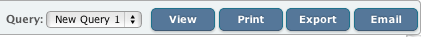

Hadoop Query Viewer
In this chapter
This chapter explains about Query viewer.
Introduction
Once the query is designed through Query Builder Interface you would like to execute your query against your data stored in QueryIO. Query Viewer is used to display the result of the Hadoop SQL query. All View query requests from Query manager and designer are displayed in Query viewer.
SQL queries can be executed through viewer also.

Executing Queries
You can execute your saved queries directly from Query viewer. Select the query to be displayed from the drop down and click View

Print/Export/Email Reports
Click on View to view generated report. Once the report is generated, it can be printed, exported to local system and can be mailed to registered users of QueryIO.
- Print
- Click Print to print currently opened report.
- Export
- Click on "Export" button on Query viewer page.
- In the window that will appear, specify query id and select the format(PDF, HTML, XLS) in which you want the report to be exported.
- Click Export.
- Email
- Click on "Email" button on Query viewer page.
- Specify query name, select the format(PDF, HTML, XLS) in which you want the report to be mailed and specify record names.
- Select mail recipient from the list of registered users.
- Click Email.
Copyright © 2017 QueryIO Corporation. All Rights Reserved.
QueryIO, "Big Data Intelligence" and the QueryIO Logo are trademarks
of QueryIO Corporation. Apache, Hadoop and HDFS are trademarks of The Apache Software Foundation.